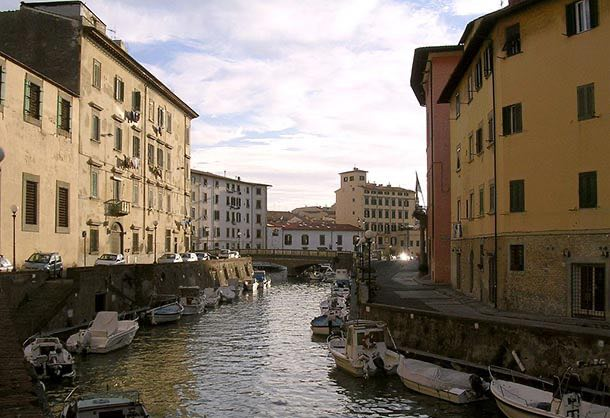
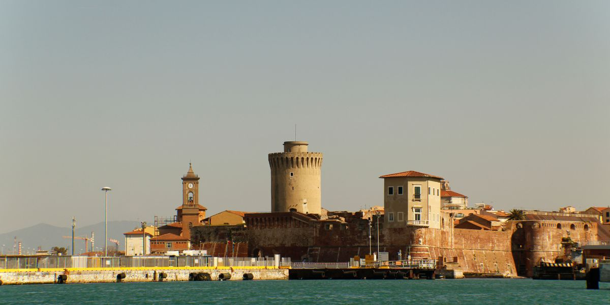
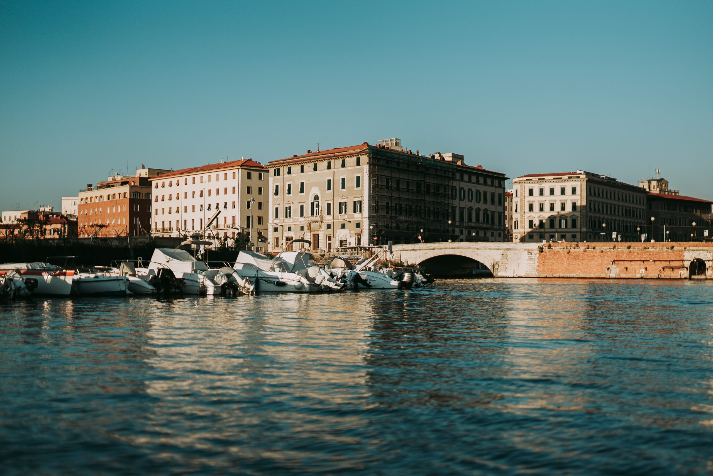
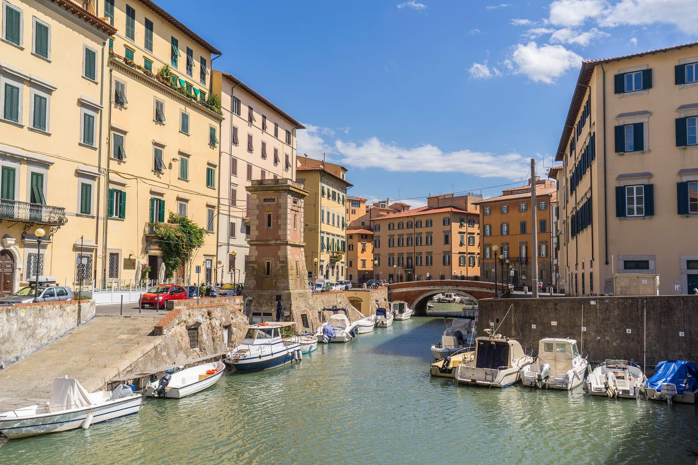
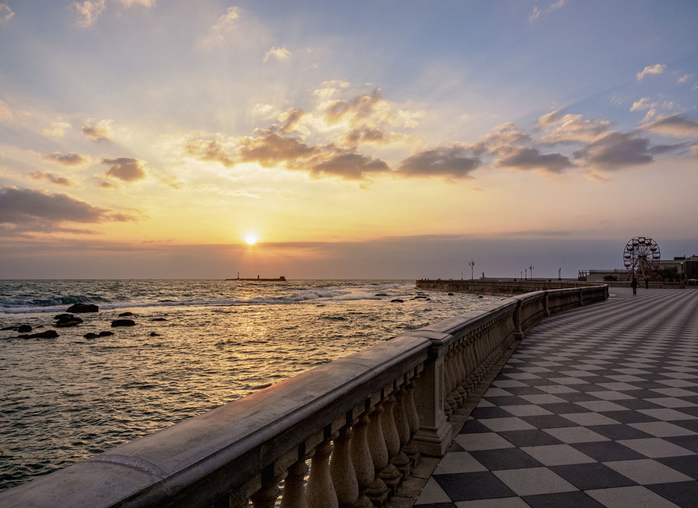
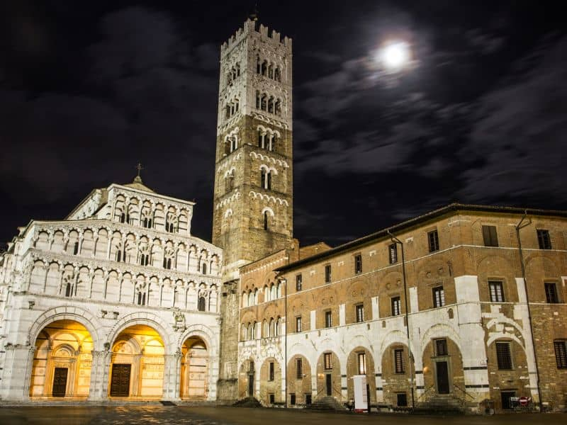

Livorno to miasto, które żyje w rytmie morza i kanałów. Najbardziej urokliwa dzielnica, Venezia Nuova, wewnątrz swoich labiryntów kryje historyczne pałace kupieckie i kościoły, które przetrwały wieki. Płynąc łodzią po kanałach, można zajrzeć do dawnych magazynów portowych, które dziś tętnią życiem jako modne restauracje i galerie sztuki.
Wewnątrz Fortezza Vecchia, monumentalnej twierdzy z widokiem na port, odkryjecie ślady rzymskich murów oraz średniowiecznych wież. Spacer po jej bastionach pozwala zrozumieć strategiczne znaczenie Livorno, a ukryte dziedzińce często goszczą letnie koncerty i wystawy pod gołym niebem.
Museo Civico Giovanni Fattori to miejsce obowiązkowe dla fanów malarstwa. Wewnątrz pięknej XIX-wiecznej Villa Mimbelli znajdują się dzieła grupy Macchiaioli – toskańskich impresjonistów, których operowanie światłem i kolorem doskonale oddaje ducha regionu. Wnętrza willi są równie zachwycające co same eksponaty, z oryginalnymi dekoracjami i meblami z epoki.
Dla fanów morskich tajemnic, Akwarium w Livorno oferuje fascynujący wgląd w faunę Morza Śródziemnego. Wewnątrz nowoczesnych zbiorników możecie zobaczyć rekiny, żółwie morskie i kolorowe rafy koralowe. To edukacyjna przygoda, która pokazuje, jak bogaty i różnorodny jest świat ukryty pod lustrem toskańskich wód.






Czas przejścia: 1 godz. 59 min (8.7 km)